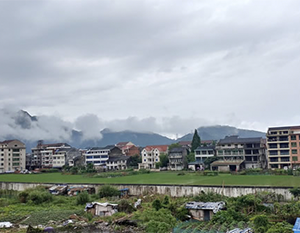
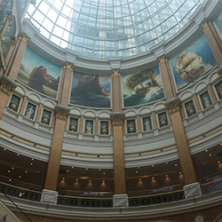
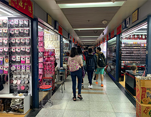

On the first of July in 2019, I spent my day in a small-spaced, stuffy airplane. This is the beginning of my study abroad trip to Shanghai, China. However, before we get to Shanghai, my dad (who came along) and I flew to Wenzhou, the place where my grandparents and most of my extended family reside. After spending about 4 days jet-lagged and tired, my dad and I made our way to Shanghai by high-speed rail.
Arriving in Shanghai within 3 hours, we make our way to the hotel to meet the other participants and teachers. After safely making our way to the hotel, my dad leaves, going back to Wenzhou. I am now left with a group of people I don't know and is starting to feel extremely uncomfortable. As someone who seldom interacts with new people, it is hard to create conversation. Nonetheless, after a hour or two of everyone trying to get rooms, registered, and SIM cards, we start to familiarize ourselves. Everyone participating in this program are from all over the United States, people from North Carolina, Texas, California, Virginia, New York, and even Illinois are gathered in the small lobby of the hotel we will reside in for the next 21 days. After getting through the hectic first day, the following days start to smooth out. All of us arrived on a Saturday, and classes did not start until Monday, so for the weekend, us students are introduced to the area along with the route to and from the University.
The University we attended is called East China Normal University, or ECNU for short. The campus is quite big and honestly, I don't think I explored the whole place during my time there. After a few days, I fell into a routine of getting ready at 7, grabbing breakfast around 8 at the convenience store down the street, taking a 20 minute walk to the school in the blazing summer heat, sitting in class for 3 hours, grabbing lunch, going on an excursion to a company, returning to the hotel, grab dinner, and sleep. It seems very boring, however, students were let loose during lunch and after our excursion is over. Out of the whole day, I would say about 60-65% was filled with my friends and I exploring the city.
One of the places we frequented is called Global Harbor. It is a giant shopping mall filled with shops ranging from affordable (lower levels) to extremely expensive (upper levels). To get to the mall from the school, my group would walk 30 minutes along the streets because there was no subway station near the school. To the right is a photo of the ceiling of Global Harbor.
Though Shanghai is fun to explore and see, what I looked forward to the most were our weekend trips. Every weekend our group would take a trip to another city in the surrounding area. For the first week, we went to Yiwu, a city located in Zhejiang Province. Yiwu is known for its International Trade City, comprised of five districts, each having 5 floors. All of the districts are connected with bridges and it is extremely easy to get lost in the trade city. Our group was constrained to the first district and even then, some groups got lost and it took some time for everyone to meet up at our designated spot. 
Our second weekend trip was to Hangzhou, also located in Zhejiang Province. There is a separate blog post about this trip that you can access by clicking here.
After about 2 weeks and a half of traveling, learning, and experiencing, the students were required to make a business pitch. There were 7 groups and the top 3 received prize money. 1st place got 2000元, 2nd place got 1000元, and 3rd got 500元. My group got 3rd place, with our pitch about opening a bubble tea shop that also operates an arcade and bar. Essentially a Dave&Busters with bubble tea services. My group consisted of 5 people, so each of us got 100元 which equals about $15.50.
Then the day after our pitches were heard, people started to go back to the States. Some had flights at 6am, some at 8am, and others stayed in China for a bit longer to visit family or vacation. One of my friends and I stayed a bit longer. My flight back to the States wasn't until 2 days later and my friend was staying in China for another week before flying to Japan. During our two days outside of the program, my friend wanted to experience Shanghai at night. While still with the program, we had a curfew of 10pm, meaning everyone had to be in their rooms by 10pm, so we couldn't experience Shanghai night life. The following night, my friend and I got to do that with her parents. We went around the Pudong area, enjoying the quiet night and looking at the sparking city. After the last two days of fun, I had to leave the city of Shanghai with a heavy heart.
Below are some photos my friends and I took during the 21 day experience together.